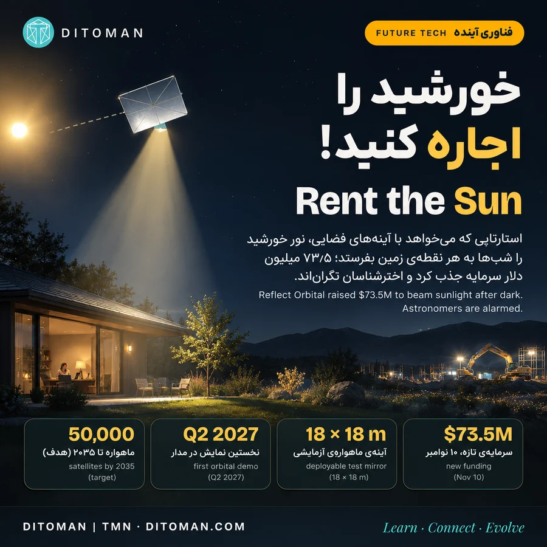
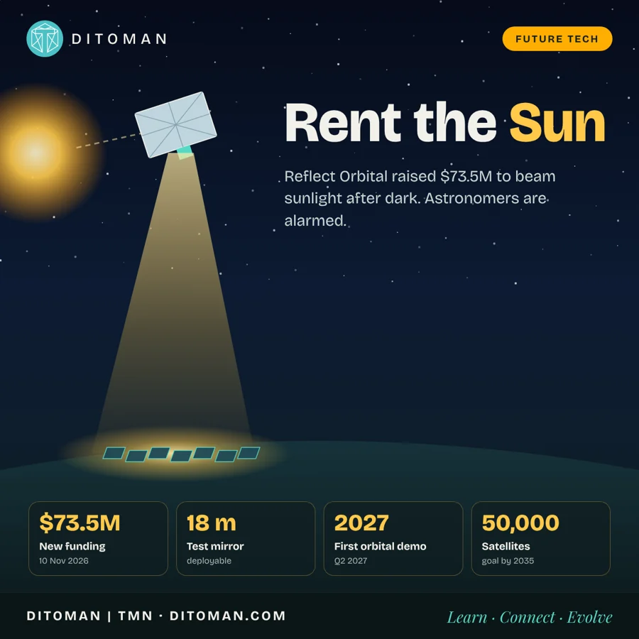

خورشید را اجاره کنید! استارتاپی که شبها نور خورشید را از فضا به زمین میفرستد
Rent the Sun: the start-up beaming sunlight from space at night
Reflect Orbital با ۷۳٫۵ میلیون دلار سرمایهی تازه، آینههای فضایی میسازد. چقدر برق میدهد، کاربری زمین را چطور عوض میکند و چرا اخترشناسان نگراناند؟
Reflect Orbital has raised $73.5M to build orbital mirrors. How much power could they deliver, how could they change land use, and why are astronomers alarmed?
0. در یک نگاه
شب شده، خورشید رفته، اما یک مزرعهی خورشیدی در صحرا هنوز نور میگیرد. منبع نور؟ آینهای به اندازهی بیش از یک زمین تنیس، ۶۰۰ کیلومتر بالاتر از سرمان.
این ایدهی استارتاپ آمریکایی Reflect Orbital است که روز ۱۹ آبان (۱۰ نوامبر ۲۰۲۶) اعلام کرد ۷۳٫۵ میلیون دلار سرمایهی تازه گرفته و کل سرمایهاش از ۱۰۰ میلیون دلار گذشته است. شعارش ساده و جسورانه است: «نور خورشید، هر وقت بخواهید».
| شاخص | عدد |
|---|---|
| سرمایهی تازه | ۷۳٫۵ میلیون دلار (۱۰ نوامبر ۲۰۲۶) |
| کل سرمایه | بیش از ۱۰۰ میلیون دلار |
| آینهی ماهوارهی آزمایشی | ۱۸ × ۱۸ متر، تاشو |
| ارتفاع مدار | حدود ۵۰۰ تا ۶۵۰ کیلومتر |
| نخستین نمایش در مدار | سهماههی دوم ۲۰۲۷ |
| هدف بلندمدت | حدود ۵۰ هزار ماهواره تا ۲۰۳۵ |
این خبر هم هیجانانگیز است و هم بحثبرانگیز: برای صنعت انرژی یک امکان تازه، و برای اخترشناسان و طرفداران آسمان تاریک یک نگرانی جدی.
1. ایده چیست؟
خورشید در فضا هیچوقت غروب نمیکند. ماهوارهای که در مدار مناسب باشد، حتی وقتی زمینِ زیرش شب است، هنوز نور خورشید را میبیند. Reflect Orbital میخواهد این نور را با آینههای بزرگ و سبک بگیرد و به نقطهای مشخص روی زمین برگرداند.
بن نواک، مدیرعامل و همبنیانگذار شرکت و مهندس سابق اسپیسایکس، میگوید: «خورشید قدرتمندترین منبع منظومهی شمسی است» و شرکتش میخواهد تعیین کند کجا و کی بتابد. به گفتهی خودش، این «فیزیک تازه» نیست؛ «مهندسی تازه» است. آینهها کمی براقتر و کارآمدتر از آینهی حمام خانهاند.
2. چطور کار میکند؟
- آینهی تاشو: چهار پنل مثلثی که در مدار باز میشوند و مربعی ۱۸ متری میسازند. هر پنل حدود ۵۰۰ گرم وزن دارد و ضخامتش حدود ۱۵ هزار اتم است؛ رویهی آلومینیومی با پشتی پلاستیکی مخصوص فضا.
- مدار: ماهواره ابتدا در حدود ۵۰۰ کیلومتر مستقر میشود و برای نمایشها به ۶۵۰ کیلومتر میرود؛ مداری همگام با خورشید که بیشتر وقتها رو به نور است.
- نشانهگیری بدون سوخت: سه چرخ واکنشی بزرگ، آینه را میچرخانند تا بازتاب روی هدف بماند.
- لکهی نور روی زمین: دایرهای به قطر حدود ۵ کیلومتر، برای هر هدف حدود ۵ دقیقه در هر عبور.
- روشنایی: در نسخهی آزمایشی، تقریباً هماندازهی ماه کامل. از زمین شبیه ستارهای بسیار درخشان و متحرک دیده میشود.
- هزینه: ساخت نمونهی اولیه حدود ۲ میلیون دلار؛ برآورد هزینهی هر واحد در تولید انبوه حدود ۳۰۰ هزار دلار.
3. از بالن تا مدار: مسیر پنجساله
- ۲۰۲۱: تأسیس شرکت در کالیفرنیا توسط بن نواک و تریستان سملهاک
- مارس ۲۰۲۴: آزمایش با آینهای ۶ متر مربعی روی بالن هوای گرم؛ نور خورشید در گرگومیش روی پنلهای خورشیدی زمینی تابانده شد
- سپتامبر ۲۰۲۴: سرمایهی اولیه ۶٫۵ میلیون دلار با حضور Sequoia
- مه ۲۰۲۵: ۲۰ میلیون دلار از Lux، Sequoia و Starship Ventures؛ معرفی ماهوارهی Eärendil-1 (نامی از ارباب حلقهها)
- ژوئن ۲۰۲۵: قرارداد ۱٫۲۵ میلیون دلاری با آزمایشگاه پژوهشی نیروی هوایی آمریکا
- تا پایان ۲۰۲۵: بیش از ۲۶۰ هزار درخواست برای روشنایی شبانه، از ساختوساز و رویدادها تا امداد و نجات
- ۲۰۲۶: کمیسیون ارتباطات آمریکا (FCC) مجوز ماهوارهی آزمایشی را داد، با بررسی بیش از ۱٬۸۰۰ نظر عمومی
- مهر ۱۴۰۵: آزمایش با نورافکنهای قدرتمند در صحرای کالیفرنیا، نزدیک لونپاین
- ۱۰ نوامبر ۲۰۲۶: ۷۳٫۵ میلیون دلار سرمایهی تازه، با Salesforce Ventures و Buckley Ventures در کنار سرمایهگذاران قبلی
- ۲۰۲۷: نخستین نمایش در مدار در سهماههی دوم؛ دو پرتاب اختصاصی هم با Skyroot Aerospace خریده شده
4. ظرفیتها: نور شب به چه کاری میآید؟
- نیروگاههای خورشیدی: مشتری اصلی. هدف، کار کردن چند ساعت بیشتر بعد از غروب و پیش از طلوع است؛ دقیقاً همان ساعتهایی که مصرف برق اوج میگیرد و پنلها بیکارند.
- امداد و نجات: روشن کردن منطقهی زلزله یا سیل در چند دقیقه، بدون نیاز به ژنراتور و برق محلی.
- ساختوساز شبانه: کارگاههای دور از شبکهی برق که امروز با ژنراتور دیزلی روشن میشوند.
- رویدادها: کنسرت و جشنوارهی بزرگ در فضای باز.
- کاربرد نظامی: نیروی هوایی آمریکا از نسخهای شبیه نورافکن هلیکوپتر یا منور حمایت مالی کرده است.
5. حساب انرژی: چقدر واقعاً برق میدهد؟
اینجا هیجان باید با عدد کنار هم بنشیند. نور خورشید ظهر در بالای جو حدود ۱٬۳۶۰ وات بر متر مربع است. بر اساس محاسبهی اتان سیگل، اخترفیزیکدان:
- یک آینهی ۱۸ متری در ارتفاع ۶۲۵ کیلومتر حدود ۰٫۰۰۴ وات بر متر مربع به زمین میرساند؛ یعنی حدود یک سیصدهزارم نور ظهر.
- یک آینهی ۵۴ متری حدود ۰٫۰۴ وات؛ ده برابر روشنتر از ماه کامل، اما هنوز برای برق کافی نیست.
- برای برق مفید یک نیروگاه خورشیدی به حدود ۲۰۰ وات بر متر مربع نیاز دارد؛ یعنی حدود ۵ هزار آینهی ۵۴ متری که همزمان روی یک نقطه بتابند.
- هر ماهواره با سرعت حدود ۷٫۵ کیلومتر بر ثانیه حرکت میکند و فقط چند دقیقه بالای هر نقطه است؛ پس برای نور پیوسته، صف طولانی از ماهوارهها لازم است.
- هدف شرکت: ۴ هزار ماهواره تا ۲۰۳۰ و رساندن حدود ۱۵ درصد نور ظهر به نیروگاهها.
- سناریوی حداکثری: ۲۵۰ هزار ماهواره میتوانند حدود ۲۰ درصد نور ظهر را همزمان به حدود ۸۰ نقطه برسانند؛ معادل خروجی شبانهی حدود ۱۶ نیروگاه خورشیدی.
یعنی: نور شبانهی فضایی جایگزین نیروگاه نیست؛ اما اگر در مقیاس انبوه ساخته شود، میتواند «روز خورشیدی» را کش بدهد؛ همان یکی دو ساعت گران و پرمصرفِ غروب و سحر.
6. چقدر میتواند مصرف انرژی را تغییر دهد؟
- ساعتهای طلایی: بزرگترین ارزش در عدد کل برق نیست؛ در زمان آن است. برق غروب در بیشتر شبکهها گرانترین برق روز است. هر دقیقه کار اضافهی پنل در این ساعتها، ارزش بیشتری از ساعت ظهر دارد.
- رقیب باتری: امروز برای برق شب، برق ظهر را در باتری ذخیره میکنند. اگر نور فضایی ارزان شود، بخشی از نیاز به باتری کم میشود؛ اما باتریها هم هر سال ارزانتر میشوند و همین رقابت مهمترین آزمون اقتصادی این ایده است.
- خداحافظی با ژنراتور: در کارگاهها و مناطق حادثهدیده، جایگزینی نورافکنهای دیزلی میتواند مصرف سوخت و آلودگی محلی را کم کند. عدد دقیق صرفهجویی هنوز منتشر نشده است.
- زمستان و عرضهای بالا: جاهایی که روز زمستان کوتاه است، بیشترین سود را از کش آمدن روز خورشیدی میبرند.
7. کاربری زمین روی کرهی زمین چطور عوض میشود؟
این بخش آیندهنگری است، نه برنامهی اعلامشدهی شرکت؛ با هم چند «اگر» را دنبال میکنیم:
- اگر نیروگاهها ساعتهای بیشتری کار کنند، از هر هکتار زمین برق بیشتری گرفته میشود؛ یعنی برای همان مقدار برق، زمین کمتری زیر پنل میرود.
- اگر روشنایی شبانهی موقت در دسترس باشد، معدن، کشاورزی بزرگ، ساخت جاده و پروژههای بیابانی میتوانند شیفت شب داشته باشند، بیآنکه شبکهی برق به آنجا کشیده شود.
- اگر امداد بتواند در چند دقیقه یک شهر زلزلهزده را روشن کند، ساعتهای طلایی نجات در شب از دست نمیرود.
- و در مقابل: اگر شبها روشنتر شود، زیستگاه حیوانات شبزی، مسیر پرندگان مهاجر و رصدخانهها هزینه میدهند. «زمین تاریک» هم کاربری است که میتواند از دست برود.
8. نگرانیها: چرا اخترشناسان ناراضیاند؟
- آسمان روشنتر: اولیویه هنو از رصدخانهی جنوبی اروپا (ESO) در شبیهسازی خود نشان داد ناوگان کامل میتواند آسمان شب کل زمین را سه تا چهار برابر روشنتر کند.
- پژوهش پرینستون: مقالهای در Astrophysical Journal Letters نشان داد یک آینهی ۵۴ متری در محدودهی پرتو حدود ۴ قدر روشنتر از ماه کامل است و درخشش پخششدهاش تا حدود ۳۴ کیلومتر دورتر هم از مهتاب بیشتر است.
- چشم و ابزار: نگاه کردن به پرتو با تلسکوپ یا دوربین دوچشمی میتواند به چشم و حسگرها آسیب دائمی بزند.
- طبیعت و سلامت: سازمان DarkSky هشدار میدهد نور شبانه چرخهی خواب انسان و مهاجرت، تغذیه و زادآوری صدها گونه را مختل میکند. شعارش: «شب فروشی نیست».
- شکاف قانونی: FCC گفت نگرانیهای نوری «خارج از حوزهی اختیار» آن است. انجمن اخترشناسی آمریکا هم دادخواستی برای رد طرح داده بود.
- زبالهی فضایی: هزاران آینهی بزرگ در مدار پایین، خطر برخورد و زباله را بالا میبرند.
پاسخ شرکت: دادههای آزمایش را با دیگران به اشتراک میگذارد، با بنیاد ملی علوم آمریکا روی توافق هماهنگی کار میکند و نرمافزارش نور را از پارکهای آسمان تاریک و رصدخانهها دور نگه میدارد. سخنگوی شرکت: «از نظارت استقبال میکنیم و میخواهیم در شکل دادن به آن نقش داشته باشیم.»
9. آزمایش جنجالی کالیفرنیا
مهرماه، شرکت در صحرای کالیفرنیا نزدیک لونپاین با نورافکنهای قدرتمند، روشنایی ماهوارههای آینده را شبیهسازی کرد. نور از ماه کامل بیشتر بود و سایههای بلند انداخت. اخترشناسان محلی و حتی مسئولان شهرستان از قبل خبر نداشتند. گاشپار باکوش، اخترفیزیکدان پرینستون، گفت «هیچ راه خوبی» برای این کار وجود ندارد.
10. این خبر برای ایران چه معنایی دارد؟
- آفتاب زیاد، نیاز کمتر: ایران بیش از ۳۰۰ روز آفتابی در سال دارد و برنامهی پنل خورشیدی روی ۶۰۰ هزار خانه را دنبال میکند. برای ما، ذخیرهسازی برق روز مهمتر از نور شبانهی فضایی است.
- نیروگاههای بزرگ بیابانی: پروژههایی مثل نیروگاه ۵ هزار مگاواتی اصفهان، در آینده میتوانند همان مشتریانی باشند که این فناوری دنبالشان است؛ اگر قیمت منطقی شود.
- آسمان تاریک ایران: رصدخانهی ملی ایران روی قلهی گرگش در نزدیکی کاشان، با تلسکوپ ۳٫۴ متری، به آسمان تاریک وابسته است. بحث جهانی دربارهی «حق تاریکی» برای علم ایران هم مهم است.
11. چهار سناریو برای آینده
- موفقیت محدود: نور شبانه برای امداد، رویداد و پروژههای خاص؛ ناوگان چندصد ماهوارهای و بازاری کوچک اما سودآور.
- انقلاب خورشیدی: هزاران ماهواره، روز خورشیدی چند ساعت طولانیتر و رقابتی جدی با باتریها؛ همان رؤیای «۱۵ درصد نور ظهر تا ۲۰۳۰».
- قاعدهگذاری سخت: قوانین تازهی جهانی برای «آلودگی نوری از فضا»؛ پروژه کوچک میشود یا فقط در مناطق تعیینشده مجاز میماند.
- پیروزی باتری: ارزان شدن ذخیرهسازی آنقدر سریع است که اجارهی نور خورشید دیگر اقتصادی نمیشود.
اما موانع جدی باقی ماندهاند: هزینه پرتاب و نگهداری هزاران ماهواره، خطر برخورد و زباله فضایی، محدودیتهای فیزیکی بازتاب نور، رقابت با ذخیرهسازهای انرژی و پیامدهای محیطزیستی.
12. نگاه دیتومان | آیا تاریکی هم روزی کالایی اقتصادی میشود؟
در اقتصاد مدرن، انسان تقریباً برای همه چیز بازاری ساخته است؛ از زمین و آب گرفته تا داده، فرکانسهای ارتباطی و ظرفیت پردازش ابری.
اکنون شرکتی میخواهد نور خورشید را نیز به خدمتی قابل سفارش تبدیل کند.
اما این نوآوری یک تضاد مهم ایجاد میکند: چیزی که برای یک نیروگاه یا پروژه صنعتی ارزش اقتصادی دارد، ممکن است برای ساکنان اطراف، حیاتوحش یا دانشمندان یک هزینه محیطزیستی باشد.
اگر روزی شرکتها بتوانند روشنایی شب را بفروشند، آیا جامعه نیز باید حق حفاظت از تاریکی را داشته باشد؟
شاید پرسش اصلی آینده این نباشد که آیا میتوانیم خورشید را اجاره کنیم؛ بلکه این باشد که چه کسی حق دارد شب را روشن کند.
منابع
- Reflect Orbital: $73.5M funding announcement (10 Nov 2026)
- Aerospace America: Reflect Orbital readies first on-orbit demo
- Scientific American: US approval of giant space mirror alarms astronomers
- Astrophysical Journal Letters: Atmospheric Light Pollution by Proposed Reflect Orbital Space Mirrors
- Universe Today: The brightened night sky nobody wanted
- Big Think (Ethan Siegel): The true cost of solar power at night
- Futurism: Unannounced California test shocks astronomers
- DarkSky International: Orbital illumination systems
- Sky & Telescope
- Space.com
- Wikipedia: Reflect Orbital